Закон всемирного тяготения
Все тела во вселенной притягиваются друг к другу с силой, прямо пропорциональноой квадрату растояния между ними(11)



Законы Кеплера
Первый закон Кеплера
Планеты движутся по элептическим орбитам в одном из фокусов которых находится солнце


Второй закон Кеплера
Радиуc-вектор планеты за равные промежутки времени описывает равные площади


Третий закон Кеплера
Квадраты звездных периодов обращения планеты относятся между собой как кубы больших полуосей их орбит